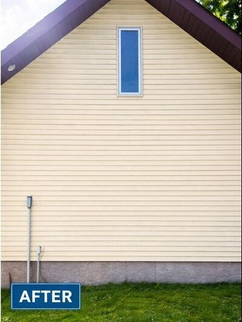

Spring Pollen Cleanup in Moose Lake, MN: Siding, Windows & Concrete

Every spring, Moose Lake turns yellow — pine pollen, bud dust, and tree debris coat siding, windows, and front walks across I-35 lake country. If you wait until summer, that film bonds with heat and becomes much harder to remove.
Quick Takeaways
- Pollen feeds algae when it mixes with spring moisture on siding.
- Windows look hazy within days — professional cleaning restores clarity fast.
- Concrete walks turn green-yellow when pollen compacts with foot traffic.
- Early spring soft washing prevents a second cleanup in mid-summer.
Why Moose Lake pollen is different
I-35 lake country has dense conifer and hardwood cover. Long pollen seasons and lake humidity keep surfaces sticky for weeks — not just a few dry days like inland climates.
Siding that looks dull overnight
Vinyl and painted wood collect a fine yellow film that holds moisture. That combination jump-starts mildew on north-facing walls in Moose Lake.
Windows and screens
Pollen between screen mesh and glass creates persistent haze. Exterior window cleaning after peak pollen removes the layer before hard-water spots form.
Bundle with salt removal
Many Moose Lake homeowners combine post-winter salt cleaning on concrete with a full exterior pollen wash — one visit, full reset.
Yellow pollen coating in Moose Lake?
Spring soft washing and window cleaning packages across I-35 lake country.
Get My Moose Lake Spring Cleanup Quote →Or call 218-576-8610